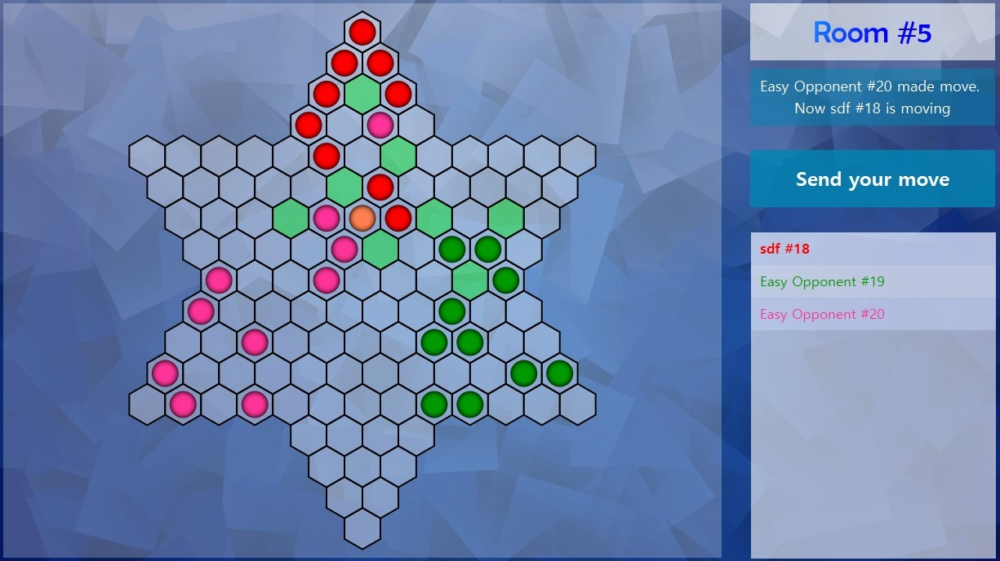

O projekcie
Projekt ten powstał na potrzeby kursu Technologie Programowania. Mieliśmy stworzyć w pełni funkcjonalną
aplikację do gry w Chińskie Warcaby wraz z interfejsem graficznym.
Całość została napisana w Javie, a
sczególny nacisk został położony na wykorzystanie wzorców projektowych, trzymanie się dobrych praktyk
programistycznych i testowanie kodu.

O samej aplikacji
Jak juz wcześniej zostało wspomniane, aplikacja jest napisana w Javie, przy czym interfejs został
wykonany za
pomocą biblioteki JavaFX. Całość działa również w technologi klient-serwer z uzyciem Java Socketów.
Po stronie serwera wykonują się wszystkie obliczenia związane z logiką gry czy obsługa użytkowników.
Tam właśnie znajdują się bieżące dane na temat stanu rozgrywki, połączonych graczy, utworzonych pokoi,
itd.
Informacje te są jedynie wysyłane do klienta, który to wykounje swój ruch, a następnie wysyla informację
na jego
temat do serwera, gdzie całość jest przetwarzasza.
Dzięki rozdzieleniu aplkacji na klienta i serwer, można dowolnie modyfikować poszczególne moduły bez
ingerencji
w drugi.